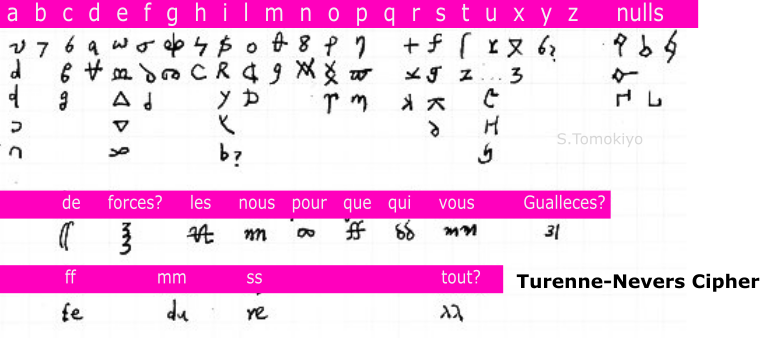
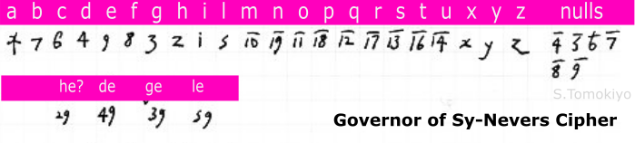
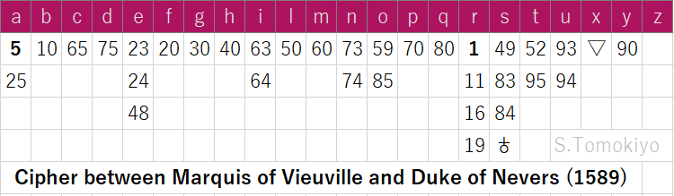
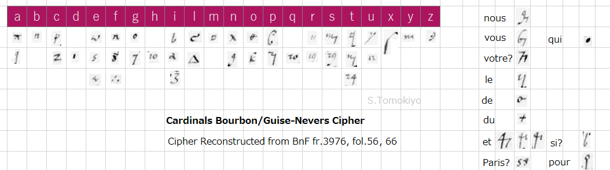
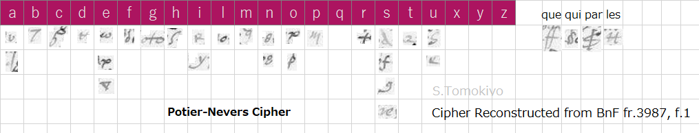

no.1 (fol.1) (June 1580)

Many ciphers in a file (BNF fr. 3995 (Gallica)) in the French archives are catalogued herein. The numbering of the ciphers (e.g., no.1, no.2, ...) is mine. Related ciphers are added from time to time.
The ciphers in this collection are mostly related to the Duke of Nevers (Wikipedia). (By the way, his father-in-law (Wikipedia), the Duke of Nevers, had the famous cryptograhper Blaise de Vigenère (Wikipedia) as a secretary.) Considering that ciphers used with the Duchess of Nevers and ciphers given to the Duke of Nevers are included, the collection probably belonged to the duke. (So I tentatively call this volume "the Nevers collection". Depending on the true provenance, the appellation may have to be changed.) While reconstructed ciphers of intercepted letters are included, at least no.67 seems to be the original cipher somehow obtained by the Duke.
Table of Contents:
Catalogue of Ciphers in BnF fr.3995 (Historical Background: (1588-1591), (1593-1594))
More Ciphers from Further Sources (BnF fr.3251, BnF fr.3315, BnF fr.3413, BnF fr.3416, BnF fr.3612, BnF fr.3616, BnF fr.3633, BnF fr.3641, BnF fr.3974-3994, BnF fr.4702, BnF fr.4712, BnF fr.4715)
Genealogy of Ciphers in BnF fr.3995
Quick Index to Ciphers in BnF fr.3995
"Chifre avec Mad[am]e".
Substitution by figures. Homophones for vowels. Nulls. Code numbers for names and words: Le Roy, La Royne mere du Roy, La Royne, Monsieur, Le Roy Philippe, L. Emp[ereu]r, Le Duc de Lorr[ai]ne, Le Duc de Savoye, Le Duc de Montp[ensi]er (Wikipedia), Le Duc de Guyse, Le Duc de Nemours, Le D. D'Umaine [Mayenne], Le Duc de Mercure, Le D. de Montm[oren]cy, Maral de Cosse, Maral de Retz, Maral Matignon, Maral D'Aumont, Maral de Biron, Mr le P[rin]ce de Conde, Roy de Navarre, Royne de Navarre, Royne d'Angleterre, Carl De Bourbon, Carl Dest, Carl de Guyse, Monsr c[om]te? Chiverny, flandres, Ambassadeur, Mr Le Chancellier, Allemans, Suisses, Capp[itai]ne, Restres?, Argent, Armee, Huguenots, Monsieur, Madame, tous, Monsr de Bellieure, Monsr de Villeclere?, Monsr Do [i.e., sieur d'O], Monsr de la Vallette, Monsr d'Arques.
Instructions to keep even space so as not to reveal the figures are in units of two and to avoid separating words.

The endorsement appears to read "chifre avec la Duc[hesse]." The place name reads "Cassine."
Substitution by symbols, letters, and figures. Homophones for vowels. Substitution letters for double consonants. Nulls.
The main part consists of listing of names to be represented by code words. "Roy" is represented by "Bachellier" or "Brodeur." Instructions prescribe use of capitals for the initial letter of code words used as such. A wavy symbol attached to a code word for a person represents his spouse.

Substitution by letters, figures, and symbols. Some homophones. Two-digit figures with an overbar or a virgule (meaning a small "/" to the bottom-right herein) represent words and names. Note in a different hand caution that "18" with an overbar represents "Biron" but "18/" represents "Mr de la Chastre".
Characters other than those listed are nulls.

"Chifre avec la Duchesse ma feme en ce voiage des bains de Lu[c]ques", i.e., Lucca in Italy.
List of words represented by two-digit figures or figures with an overbar or an underbar). Notes appear to explain use of symbols.

In Italian. The endorsement bears a symbol reserved for subscription (sender) and superscription (addressee).
Substitution by figures, symbols, and letters. Homophones for vowels. Special symbols for "che", "perche", "non", "et", "qua", "que", "qui". Symbols for vowels to be placed over a consonant symbol.
Two-digit figures with an overbar, letters with an overbar, and a few symbols are used to represent names and words: Cardinal Rusticchuazi (Wikipedia), C: Alesso, C: D'Este, C: farnese, C:, Car Madruzzo (Wikipedia), C: Gambara (Wikipedia), C: Gonz[ag]a (Wikipedia), C:, C: de sans, C: de Ramboglietto (Wikipedia), C: Granville, C: de Guisa, C: de Vaudemont, C: de Vandosme (the cardinals gathered in the papal conclave of April 1585), Papa, Noncio, Amb[assado]re, etc.
Additional instructions in Italian.

"Avec la Duchesse en voiage d'Italie."
Substitution by symbols. Homophones. Nulls.
Two-digit figures with a breve above or a virgule represent names. Alphabetic letters occasionally with diacritic symbols and roman numerals xi - xviii represent provinces and towns.
A symbol to designate a spouse, similar to the one in no.2.

Substitution by figures (and some symbols) and letters. Characters other than those listed are nulls.
A dot should be put over a two-digit figure.
Figures represent names. (It appears the figures 1-19 are both used in the substitution cipher and the nomenclature. The dot does not serve to distinguish these. Similar ambiguity is found in many Italian ciphers at the time (Meister p.343, p.355, p.361, p.370, etc.).)
This cipher is used in some passages in papers in BnF fr.3976, fol.131, 133, 139. (The second remains undeciphered but can be read with this: "roy", "Nevers", "La Cassine", ....)

The place name on the endorsement illegible (Alsini??).
Figures 1-102 represent names: Car[dina]l de Bourbon, C. de Guise, C. de Vandosme, C. dest, C. de Vaudem[on]t, Pape, Roy, Royne mere, R[oy]ne Regnante, R[oy]ne de Navarre?, Roy de Navarre?, P[rin]ce de Conde, P[rin]ce de Conty, Comte de Soisson, Montpensier, Princesse d[e] Lorr[ai]ne, Princesse de Conde, ....

Substitution by letters, figures, and symbols. Some homophones. Any characters may be made as nulls.
Figures 1-104 with an overbar represent names: Pape, Impr, Roy despegne, ....

The name on the endorsement illegible.
Substitution by letters, figures, and a few symbols. Some homophones. Symbols for nulls.
Figures 10-96 represent place names and some words: Rethel, Mesieures, Donchery, Omont, La Cassine, Mouson, Villefranche, Maubert, .... Figures 10-59 with an overbar represent persons: Roy, Royne, Royne mere du Roy, Royne de Na[va]re, Roy de navare, Car[dina]l de Bourbon, ....

Substitution by letters, figures, and symbols. Some homophones.
Figures or letters a-z with a virgule represent words and names: Monsieur, Madame, Madamlle, ..., Pape, empereur, Roy despagne, Royne dangleterre, D: de Savoie, ....
Capital letters (other than I) are used to represent small words: la, le, de, au, est, ....
This is used in a letter of Cardinal of Guise to the Duke of Nevers, Clairmont, 25 February (BnF fr.3413, no.49 (f.102)).

"Chiffre pour monsigneur Le Duc de Nivernoys sen allant a Picardye Depesche au moys Dauril 1587"
Substitution by symbols, letters, and figures. Homophones.
Special symbols for some names (Le Roy, La Royne, Le Roy despaigne, Le Roy de navarre, Le prince de Conde, Le prince de parme, Mons. de Guyse, Mr de Mayne, Mr dAumalle, La Royne dang[lete]rre, Les pais bas, Piccardye, Cathollicques, huguenots, Armee, ...), small words ("monosilabes"), nulls, and double consonants.

Substitution mainly by figures. "U" alone is assigned two symbols, one of which is "o", which, instructions warn, should not be used too often "pour ne confondre trop le chiffre." The substitution alphabet is almost identical with that of no.23 (slight differences in l, u, x, y).
Figures with two dots above are nulls.
Figures 1-100 and letters a-y with an overbar represent names (e.g., Duc dalbeuf, D: de Guise, D: de Nemours, D: dUmaine, D: dAumalle, D: de Mercure, D: de Joieuse, D: despernon) and words.
This appears to be used in the following letters (in Italian) but the code numbers do not match (nor do those of no.23):
Camillo Volta (the Duke's agent in Rome) to the Duke of Nevers, dated 8 October 1585 (BnF fr.3974, fol.83)
Camillo Volta? to the Duke of Nevers (BnF fr.4702 no.42? (fols.77r, fol.78v))

"Jargon". Names and words numbered 1-154 (Arabic and Roman) are represented by code words.
The roman numeral for "80" is not written as lxxx but as iiiixx (that is, "quatre-vingt") and that for "90" as iiiixxx (that is, "quatre-vingt dix"). While "c" for "100" and "cx" for "110" are the same as in the modern convention, "120" is not written as "cxx" but as "vixx" (6*20), "130" is "vixxx", and "140" is "viixx" (7*20). This convention is common in the other ciphers in this collection.
As with no.2, instructions prescribe use of capitals for the initial letter of code words used as such and a wavy symbol attached to a code word for a person to represent his spouse. In addition, when a name has to be used a second time, it is advised to use the roman numeral rather than the code word.

The place name on the endorsement seems to be "Poitiers."
Substitution by symbols. Homophones. Symbols for nulls. Symbols for monosyllables.
Long listing of symbols (and code words?) for words and names. Symbols include Arabic figures only for words in the sections R-V.

Substitution by figures, symbols, and letters. Homophones. Symbols for nulls.
Figures 10-100 and figures 1-81 with an overbar represent words and names.
The endorsement on fol.33 illegible (to me).

The cipher given to the Duke of Nevers when the latter went to Poitou in command of an army in October 1588.
Substitution by symbols. Homophones. Symbols for nulls. Symbols for monosyllables. Symbols for double consonants. Similar to no.15 and no.12.
Symbols for words and names: Le Roy, La Royne, Le Roy despaigne, Le Roy de navarre, Monsieur de Guyse, Monsieur de Mayenne, Monsieur daumalle, La royne dangleterre, Le viconte de Turenne, Mr de Chastillon, Monsieur de Mercure?, Cathollicques, huguenots, Armee, Bretaigne, ....

Substitution by figures, letters, and symbols. Homophones.
Code numbers 1-99 (Roman numerals of the same convention as no.14) and a few special symbols represent words, towns, provinces, personal names, and "dames" (Princesse de Conde, Me de Montp[ensie]r, Me de Nemours, Mede long[vil]le la Dou[airie]re).

Substitution by two-digit figures. Homophones. Nulls.
Figures up to 99 and some letter combinations represent words (in Italian). The assignment of figures is in random order in the enciphering table ("per scriuere") and a table sorted in a numerical order is provided for deciphering ("per cauare"). That is, this is a two-part code.

The place name on the endorsement illegible ("chanpleny"??).
Substitution by two-digit figures. Homophones for vowels. Symbols for Nulls.
Figures up to 136 represent words (in Italian). As with no.19, the assignment of figures is in random order and a table sorted in a numerical order is provided for deciphering.

Figures 1-78 represent words and names.

The place name on the endorsement reads "Desize" (Wikipedia). The name illegible in "Chiffre avec Gen...."
Substitution by symbols, letters, and figures. Homophones. Symbols for nulls.
Figures 1-100 with an overbar and 99-45 with a virgule represent words and names.

The place name on the endorsement reads "Neuers" (Wikipedia).
Substitution mainly by figures. No homophones. Figures "2", "3", "4" with two dots above and "0" are nulls. Of these, instructions advise using "0" the most often. The substitution alphabet is almost identical with that of no.13 (slight differences in l, u, x, y).
Figures 10-69 with an overbar represent words and names. The vocabulary is similar to (but smaller than) no.10.
Instructions advise writing the figures continuously.

The place name on the endorsement reads "Dezize" (Wikipedia).
Substitution by symbols and letters. Homophones. Symbols (mainly capital letters) for nulls.
Figures 1-100 and 1-23 with an overbar represent words and names.

The place name on the endorsement reads "Neuers" (Wikipedia).
Substitution by two-digit figures. Some homophones. Nulls. The substitution alphabet is a subset of no.70.
Roman numerals (of the same convention as no.14) 10-89 represent words and towns. Letters a-z represent provinces. Arabic figures 1-99 with an overbar represent names and words. Special symbols for "dames": Madame de Neuers, Me de Guise, Me de Nemours, Me de Montp[ensie]r, Me Dumaine [Mayenne], Me de Long[vil]le Douairiere, Me la Duch[es]se de long[vil]le.
This appears to be used in the following letters in BnF fr.3416:
no.30 (fol.35) Duke of Nevers to his son
no.32 (fol.38) Duke of Nevers to his son, "le duc de Rethelois" [Charles Gonzague Cleves]
This is also used in no.9 (f.27; 2 December 1589), no.17 (f.38; 17 November 1589), no.36 (f.59), no.45 (f.68), no.46 (f.69) of BnF fr.4715.
(Henry III was assassinated on 1 August 1589. The Duke of Nevers had left court after the reconciliation of Henry III with the King of Navarre (Wikipedia).)

The place name on the endorsement reads "Clamecy", from where the Duke of Nevers wrote some letters in August-September 1589 (BnF fr.3977).
Substitution by letters and symbols. Homophones. Symbols for nulls.
Figures 11-99, figures 1-96 with an overbar, figures 1-99 with a virgule represent words and names.
This is used in no.14 (f.34) and no.33 (f.56) of BnF fr.4715.

The place name on the endorsement reads "Desize" (Wikipedia). "Chiffre auec M La."
Substitution by letters and symbols. Some homophones. Symbols for nulls.
Figures 10-99 and figures 99-45 with a virgule represent words and names.

Substitution by two-digit figures. Some homophones. Nulls.
Figures 11-97 with an overbar represent names and words. Letters (z-a) represent provinces. Roman numerals 11-90 (with the same convention as no.14) represent words and towns.

The place name on the endorsement reads "Neuers" (Wikipedia).
Substitution by symbols, letters, and figures. Homophones. Symbols for nulls.
Figures 8-98 with an overbar and figures 100-1 with a virgule represent names and words.

The place name on the endorsement illegible ("Mocc??").
Substitution by two-digit figures. Homophones. Some letters are designated as nulls.
Figures and some letters represent names and words.
Partial reconstruction of the Spanish cipher of no.54.
Partial reconstruction of substitution cipher mainly by figures with some diacritics.
Annotation in Italian mentions "Rafaello"?, "fiorenza", "di parigi".
Partial reconstruction of substitution cipher by figures.
Annotation in Italian mentions "luigi", "fiorenza", "di parigi".
Partial reconstruction of no.47.
Annotation in Italian mentions "di parigi".
Notes in French explain vowel indicators placed over a substitution letter, with an example "di parigi."
The name on the endorsement on fol.63v is illegible (to me).

Titled "Per Cauare", which suggests there was a separate table for encoding.
Figures 11-99 represent letters, titles, and place names.
Figures 10-99 with an overbar or two dots above represent names. Some special symbols for common words. In Italian.
Symbols for nulls.
This was used by the Duke of Mantua, Duke of Nevers, Carlo Barberini (Charles Barberini), and Filippo Sega (Philippe Sega), Bishop of Piacenza in 1590 and 1593 (see another article).
The Duke of Nevers was a staunch Catholic, but wavered between his loyalty to Henry III and the Duke of Guise, head of the Catholic League (Wikipedia), both of whom were determined to suppress heretics in France. When the overbearing Duke of Guise was assassinated by the king's men in December 1588, the Duke of Nevers was commanding the royal army besieging La Ganache, a small fortified place near the coast. The town surrendered in January 1589, but soon the Duke's army disintegrated, with many followers now unwilling to fight for the king who murdered the champion of the Catholic cause. The Duke himself soon retired to Nevers, his estates on the upper Loire. (Biard ii, p.118-120, 123-124) Soon it became clear that Henry III, in conflict with the League, needed the help of the Huguenots, and he was reconciled with Henry of Navarre in April (Baird ii, p.142). The Duke of Nevers could not accept any alliance with Protestants (Wikipedia), but he definitely supported the King over the League when he heard of the papal excommunication of the King in late May (Jensen p.188).
When Henry III was assassinated by a fanatic Catholic monk in August 1589, the Duke of Nevers received letters both from Henry of Navarre, now Henry IV, and the League. While he had no intention to be a rebel, still less to join the League, he still hesitated to support the Protestant king and kept away from the court. After the victory of Henry IV at the Battle of Ivry in March 1590, the Duke of Nevers pledged allegiance to the King, while expressing his hope that the King would convert to Catholicism. (Memoire de Nevers, vol.2, preface)
The Duke of Nevers joined Henry IV, who laid a siege on Paris, which, however, had to be lifted when the Duke of Parma came to relief from Flanders in August 1590.
The King's letter to the Duke of Nevers as early as 17 January 1591 mentions use of cipher (Memoires de Nevers, ii, p.218) The cipher may have been the cipher no.36 below.

"Chiffre pour Monsieur de Nevers avec le Roy"
Substitution by symbols. Homophones.
Some common words and double letters are represented by figures and letters.
Letters struck with a slash (/) and some common words are designated as nulls.
Special symbols for superscription (addressee) and subscription (sender) are defined.
Letters and other symbols represent names. Some common words are also used as code words.
This is generally similar to the royal cipher of Henry II and Henry III mentioned above and incorporates some new ideas.
This is used in the following letters in BnF fr.3615
no.48 (fol.52) Henry IV to the Duke of Nevers, camp de Chartres, 19 April 1591 (Henry IV took Chartres after a siege from February to April 1591 (Baird ii, p.271, 272).)
no.57 (fol.64) Henry IV to the Duke of Nevers, camp de Compiene, 26 July 1591
no.71 (fol.83) Henry IV to the Duke of Nevers, camp devant Noyon, 7 August 1591
no.73 (fol.85) Henry IV to the Duke of Nevers, camp de Noyon, 19 August 1591
no.78 (fol.90) Henry IV to the Duke of Nevers, Chaulny, 13 September 1591 (partially undeciphered)
no.79 (fol.91) Henry IV to the Duke of Nevers, La Chapelle, 17 September 1591
no.81 (fol.93) Henry IV to the Duke of Nevers, Chaulny, September 1591
no.86 (fol.100) Potier de Gesvres to the Duke of Nevers, camp de Noyon, 19 August 1591

The place name on the endorsement reads "Neuers" (Wikipedia).
Substitution by two-digit figures. Homophones. Nulls.
Figures 1-100 represent words in Italian. Figures 1-99 with an overbar are for names.
A table sorted in numerical order is provided for deciphering ("per cauare").

The place name on the endorsement reads "Dezize" (Wikipedia).
Substitution by two-digit figures. Homophones. Nulls.
Figures, figures with two dots above, figures with an overbar, and a few symbols represent names and words. (Irregular ordering of figures caused some errors. 91 with two dots above represents "quant" but it is also designated as a null. 92 with two dots above represent both "ruyne" and "flandres", etc.)
A cipher extracted from an intercepted letter. (The name on the endorsement is illegible to me.)
Substitution by symbols and figures. Homophones.

The place name on the endorsement reads "Donchery".
Substitution by figures and symbols. Homophones. Nulls.
Arabic figures and Roman numerals (of the same convention as no.14) represent words and names.
This decodes the undeciphered portions in Nicolas Brulart de Sillery to Duke of Nevers, 25 July 1593 (BnF fr.3984, f.198).

The place name on the endorsement reads "Donchery".
Substitution by figures. Some homophones. Nulls.
Figures with an overbar and figures with two dots above represent words and names.
This is used in the following letters:
Albert de Gondy, duc de Retz to the Duke of Nevers, Desenzan (Wikipedia), dated 24 March 1593 (BnF fr.3983 fol.178)
Gondy to the Duke of Nevers, Solurre, 21 October 1593 (BnF fr.3986 fol.189)
Gondy to the Duke of Nevers, Solleurre, 19 December 1593 (BnF fr.3988 fol.79)

The place name on the endorsement reads "Neuers" (Wikipedia).
Substitution by figures. Some homophones. Nulls.
Figures, figures with an overbar and figures with two dots above represent words and names.

The place name on the endorsement illegible.
Substitution by figures and symbols. Homophones. Symbols for nulls.
Figures 12-71 with an overbar represent names and words.

The place name on the endorsement reads "Gisors" (Wikipedia).
Substitution by two-digit figures. Homophones. Nulls.
Figures, figures with an overbar, a few symbols, and capital letters represent names and words.

The place name on the endorsement reads "Camp Provin" (Wikipedia).
Substitution by two-digit figures. Homophones. Nulls (1, 89, 35, 28, 0).
Instructions advise that "1" and "0" as nulls should be put in the middle of a two-figure code number as 7831452807, which is parsed as 78(u) 314(o) 52(u) 807(s) ("87" is "s" and "0" is null). (Such an intercalary null was also suggested by Matteo Argenti, as noted in another article.) On the other hand, use of two-figure nulls within a word such as 52(u) 89(-) 67(o) 86(u) 28(-) 53(s) is not recommended.
Figures with a virgule, figures with an overbar, figures with two dots above, Roman numerals (of the same convention as no.14), letters, and symbols represent words and names.

The place name on the endorsement reads "Chelles" (Wikipedia).
Substitution by two-digit figures. Homophones. Nulls.
Figures with an overbar, figures, figures with two dots above represent names and words.
This is used in the following letters:
Jean de Vyvonne, Marquis de Pisany to the Duke of Nevers, Verona, 13 January 1593 (BnF fr.3883 fol.11, 13)
Pisany to Duke of Nevers, Padova, 23 March 1593 (BnF fr.3983 fol.169)
Duke of Nevers to Pisany, Nevers, 8 September 1593 (BnF fr.3985, fol.209), undeciphered (reading of one passage shown below)
Jerome Gondy to Pisany, Florence, 22 September 1593 (BnF fr.3986, fol.64)
Duke of Nevers to Pisany, 14 October 1593, undeciphered (BnF fr.3986, fol.168) (which partially reads "Duc de Nevers ne sera receu come ambassadeur pour plusieurs resons. Je luy ay demande ....")


Title appears to read "Cifra col Sr Caure Giac[om?]o Graty?" Endorsement in French illegible (to me).
Substitution by figures and letters. Substitution letter (x) for "et" is defined, as is often the case in Italian ciphers (Meister, in passim). Some homophones.
Figures with an overdot represent names and words (in Italian): Don Giouanni di Jacquez, Don Christoforo di Mora, Re di Nauarra, Matteo Vasquez, Duca di Guisa, Card[ina]le di Borbon, Cardle di Gondi, Duca di Nemours, Duca di Niuers, ....
A sign "+" indicates a null. A sign "6" doubles a letter.
Vowel indicators placed over a substitution character.
Partial reconstruction is found as no.34.
Cipher of intercepted letter(s) between Mr d'Umame [Maine] and Mr d'Aumalle.
Substitution by symbols. Homophones.
Substitution by symbols. Homophones.
Special symbols for double letters and some small words.
Cipher of intercepted letter(s) between Mr Pericard (secretary of the late Duke of Guise? (Memoire de Nevers, vol.2, p.95, Histoire de Henri III p.362) and Mr de St Laurin?
Substitution by letters and figures.
Cipher of intercepted letter(s) between Mr d'Umame [Maine] and Mr de Villars
Substitution by letters and symbols. Special symbols for double letters and some small words and names.
The place name on the endorsement reads "Corbeil" (Wikipedia).
Substitution by symbols. Figures 1-9 are nulls.
Many symbols for words and names (in Italian).
Spanish cipher between Philip II and Don Diego de Ibarra.
Substitution by symbols, letters, and figures. Two- or three-letter combinations represent words and names. Some symbols (like / ^ r ..) for indicating a consonant to form a syllable.
This appears to be a partial reconstruction of Cp.34 (see another article) but there are some discrepancies (e.g., symbols for "i" and "x").
Partial reconstruction of a Spanish cipher used between Philip II and the Duke of Parma, Duke of Sessa, and Don Diego de Ibarra ("Syllabic Numerical Cipher (1592)" which I independently reconstructed previously). Another version in no.31.
Substitution by letters, figures, and symbols. Exhaustive syllable representation by two-digit figures. Two- or three-letter combinations represent words and names. Consonant symbols for forming syllables.
Letters using this cipher are found in BnF fr.15575 (f.228, f.233), BnF fr.15576 (f.2) (see another article).

"Chiffre de monsieur duma[yne] auec le Chevalier de Dyou."
Substitution by symbols. Homophones. Symbols for double letters and nulls.
Special symbols for names and words.
This is used in Duke of Mayenne to Commander de Diou, Paris, 13 May 1593 (BnF fr.3984, f.7). I posted my reconstruction of this cipher in another article.

The endorsement ("Zifra Bid ..."?) illegible (to me).
Substitution by figures, figures in a square broken at both sides, and a few symbols. This cipher uses other symbols to be combined with figures to increase the number of entries representing words (in Italian). The figures in a broken square in the substitution alphabet and the other symbols combined with figures in the nomenclature are peculiar features of this cipher.
Instructions in Italian.
No.72 is substantially identical with this.

"Mons. de Laveriere" [Honoré Mauroy La Verrière] on fol.102v. The place name on the endorsement seems to read "Chartres."
Substitution by symbols. Homophones.
Figures 1-72 represent two-letter syllables and 73-98 represent double letters. 99-353 represent words, while 1-69 with an overbar represent provinces and towns.
Special symbols represent names.
This is used in a letter from Laveriere to the Duke of Nevers, Poissy, 12 August 1593 (BnF fr.3985 fol.58).

The place name on the endorsement illegible (?tangi?).
Substitution by figures and a few symbols. Homophones. Nulls.
Figures 99-47 and letters a-y represent names and words.
Substantially identical with no.67.

Cipher given to the Duke of Nevers. The place name on the endorsement seems to read "Montreau" (Wikipedia). (The Duke of Nevers wrote letters from Montereau at least in August 1593 (BnF fr.3985).)
Substitution mainly by symbols. Homophones. Nulls.
Many symbols for representing syllables. Many symbols and Roman numerals for representing names and words. (The Roman numerals adhere to the convention of no.14 but "lxxx" and "iiiixx", both meaning 80, are used in separate entries.) There are so many symbols that a separate table for deciphering is provided, in which symbols are ordered according to similarity.
Several symbols are defined to repeat the preceding letter.
Used in many letters in BnF fr.3985 etc.
This cipher is described in another article
.The Duke of Nevers was sent to Rome in order to obtain the Pope's absolution for Henry IV in 1593. He arrived in Rome in November 1593, but the Pope refused to accept him as the French king's ambassador (Memoires de Nevers, ii, p.406). Seeing that the Pope had no intention of satisfying the King's request, the Duke of Nevers left Rome in January 1594 and returned to France by way of Florence, Mantua, and Venice (ibid. p.431-433).

The place name on the endorsement reads "Desanzan" in North Italy (Wikipedia).
Substitution by figures. Homophones. Nulls.
Figures represent names and some Roman numerals represent small words.
A separate deciphering table.
Used in a letter from Andre Hurault de Maisse to the Duke of Nevers, Venice, 27 November 1593 (BnF fr.3987 fol.197)

The place name on the endorsement reads "Bologna".
Substitution by figures. Polyphonic (see another article). Nulls.
Figures 201-297 represent names and words (in Italian).
On fol.115v, a note says the subscription (sender) is 263227, which is "Nivers" (227 being null) and the superscription (addressee) is 297295, which is "Gran duca" [of Toscana?] (with 295 being null). (The Grand Duke of Tuscany was an addressee of the Duke of Nevers' letters at least in August and November 1593. (BnF fr.3985, 3987))
This is used in a letter (in Italian) from Sr Vinta to the Duke of Nevers dated 29 January 1593 (BnF fr. 3983, fol.53).
Another polyphonic cipher used by Guicciardini, secretary of the Grand Duke of Tuscany, (see another article) is somewhat similar to this cipher.

The place name on the endorsement illegible ("Boucano"?).
Substitution by two-digit figures. Homophones. Nulls.
Figures with an overbar and bare figures are used to represent names and words (in Italian).

The place name on the endorsement reads "Rome".
Substitution by two-digit figures. Homophones. Nulls.
Figures with an overbar and bare figures are used to represent names and words (in Italian).

Substitution by figures and symbols. Homophones. Nulls.
Figures represent words and names (each entry being given two figures).
Used in a letter from Francois de Bonne de Lesdiguiere, who took Grenoble for Henry IV in March 1591 (Baird ii, p.242) and was made governor there (Wikipedia), to the Duke of Nevers, Grenoble, 9 February 1594 (BnF fr. 3989 fol.87)

Substitution by figures, letters, and symbols. Homophones. Symbols for double letters, nulls, and monosyllables.
Names are represented by special symbols.

Substantially identical with no.59.
Spanish cipher used between Philip II and Estevan de Ibarra ("Syllabic Numerical Cipher (1593)" which I independently reconstructed previously).
Substitution by letters, figures, and symbols. Exhaustive syllable representation by two-digit figures. Figures with two dots above or an underbar and two- or three-letter combinations represent words and names. Consonant symbols for forming syllables.
Notes about nulls appear to be written in Spanish. This suggests that this, unlike no.54, is not a reconstruction but the original.
Endorsement illegible. Fol.127 has five paragraphs in different hands and in different languages. The nature of this document is not clear.

Endorsement being in a similar hand (apparently in Italian) and bearing the same symbol as that of no.68.
Pictographic symbols for words such as Papa, Re di francia, Re de Spagna, Duca di fiorenza, Duca di Sauoia, Duca di ferrara, Duca di Mantoua, Duca di Parma, Duca di Vrbino, Republica di Venetia, Republica di genoua, Republica di Lucca, Cardinale, Vescouo, Nuntio, Ambasciatore, Roma, francia, Spagna, fiorenza, Sauoia, Piemonte, ferrara, Mantoua, Parma, Vrbino, Venetia, Genoua, Lucca, Milano, fiandra, Arciduca Ernesto (Wikipedia), l'Aldighiera, ....

The place name on the endorsement illegible ("Quertra"?).
Substitution by two-digit figures. Homophones. Nulls. The substitution alphabet is a superset of no.25 and includes 14(c), 17(d), 39(l), 49(qu), 59(f), 69(p), 79(m), which are nulls in no.25.
Letters, figures with an overbar, and Roman numerals are used to represent names and words (in French).
This was used in the following letters:
Charles Gonzague Cleves (the Duke's son) to the Duke of Nevers dated 14 September 1592 (BnF fr.3982 f.51). Although the date of this letter is before 1595 of the endorsement of this cipher, use of 14(c), 17(d), and xviii(vous) confirms this uses no.70 rather than no.25.
Charles Gonzague Cleves to the Duke of Nevers, 2 August 1595 (BnF fr.3993 fol.71)
Charles Gonzague Cleves to the Duke of Nevers, Cambray, 24 August 1595 (BnF fr.3993 fol.254)

Substitution by figures and a few symbols. Homophones. Nulls.
Figures with a dot or two dots above and figures with an overbar are used to represent names and words (in French).
Used in an unsigned letter in BnF fr.4712 (see below), f.7.
Substantially identical with no.56.

Letters and syllables are represented by figures. Some names are represented by letters.
Instructions in Italian appears to explain adding dots to a symbol of a man to represent his wife.

"Zifra con M[da]ma"
Substitution by figures. Polyphonic (see another article) for some consonants. Homophones for vowels. Nulls.
Figures represent names and a few words (in Italian).
Instructions in Italian appears to explain (1) the polyphonic substitution and (2) adding symbols to the figure representing a person to represent his wife or his estate.

"Chiffre commun entre messieurs les secretaires destat et messieurs du conseil" given to the Duke of Nevers
Substitution by figures. Homophonic. Nulls. Figures with a breve to represent double letters.
Figures with a caret (^), a cross (x), or a dot (.) above represent names and words.

Substitution by figures, letters, and symbols. Homophonic. Symbols for nulls.
Figures with a dot or two dots above, figures with an overbar, capital letters (Latin and some Greek) represent names and words.
BnF fr.3251 contains letters partially in cipher from Lodovico Birago to Duke of Nevers (1570-1572).
From September 1570 to May 1571, they used the Ceppo-Nevers Cipher below (reconstructed from BnF fr.4702).
f.11 (no.6) Saluzzo, 14 September 1570
f.21v (no.11) Saluzzo, 12 October 1570
f.27 (no.14) Saluzzo, 6 November 1570 (with decipherment)
f.35 (no.18) Saluzzo, 15 November 1570
f.39 (no.20) Saluzzo, 30 November 1570 (with decipherment)
f.82 (no.42) Saluzzo, 20 March 1571 (with decipherment)
f.87 (no.45) Saluzzo, 9 May 1571
In November 1571, they used a numerical cipher (not deciphered).
f.119 (no.63) Saluzzo, 13 November 1571
In 1572, the year of Birago's death, they used a new cipher, which can be reconstructed from the decipherment attached to no.87 is called the Nevers-Birago Cipher (1572) herein.

f.138 (no.71) Saluzzo, 7 February 1572
f.144 (no.73) Saluzzo, 27 March 1572
f.152 (no.77) Saluzzo, 9 June 1572
f.160 (no.82) Saluzzo, 27 June 1572
f.168 (no.85) Saluzzo, 29 July 1572
f.174 (no.86) Saluzzo, 27 August 1572
f.178 (no.87) Saluzzo, 8 September 1572
f.184 (no.90) Saluzzo, 2 October 1572
BnF fr.3315 contains ciphers of the Duke of Nevers before the period of the Nevers Collection above.
These are two copies of the Duke of Nevers' cipher sent to the Duchess, 26 March 1574 from Cracovie [Krakow]. (The Duke of Nevers accompanied theDuke of Anjou, later Henry III, when the latter became king of Poland (1573-1575).) The nomenclature includes "Le Roy de Pollongne 10", "Le Duc de Savoie 15", "Madame de Savoie 16", "Royne d'angleterre 35", "Royne d'escosse 36", etc.
These are two letters in cipher. The cipher is not the above one. It is very similar to no.2 of the Nevers Collection given to the Duchess in 1584, but is somewhat different (e.g., "F" for e and "9" for q; and "x", "y", and "z" appear to be used without enciphering).
f.15 (no.5) Duchess of Nevers to Duke of Nevers, Lyon, 16th.
f.21 (no.9) Renato Birago to Duke of Nevers, Lyon 28 September 1574
This uses the cipher no.11 of the Nevers collection.
This is the same as the cipher no.42 of the Nevers collection.
A cipher not found in the Nevers collection above.
This appears to employ the Nevers-Piles Cipher (below), which reveals the name of Mons. Cassin (Procès-verbaux des Etats généraux de 1593), who was a secretary to the Cardinal of Pellevé (Wikipedia).
A cipher not found in the Nevers collection above.
(BnF fr.3416) This contains the following (apart from the letters already mentioned in the above).
no.39 (see fol.53v) Duke of Nevers to Robert de La Vieuville (this employs figures, letters, and symbols; another article presents a numerical cipher used by Nevers and Vieuville in 1589)
no.64 (fol.101) L. Regnyer to Duke of Nevers, Paris, 12 January
no.65 (fol.102) L. Regnyer to Duke of Nevers, Paris, 9 January
These include several code numbers. Such code numbers in sporadic use can be identified only by finding the code book and/or studying the context.
This contains letters partly in cipher with interlined deciphering, which allows partial reconstruction of three ciphers (called "Nevers-Pelleve Cipher", "Nevers-Guise Cipher", and "Nevers-Piles Cipher" herein).


no.1 (fol.1) Cardinal of Pellevé (also spelled Pelue) (Wikipedia) to Duke of Nevers, Rome, 6 October 1586 *Nevers-Pelleve Cipher
(Cardinal of Pelléve did not make full use of homophones and the above partial reconstruction had to be supplemented from Mathieu's letter in fol.24 below. My search is not exhaustive and there are more symbols that may be identified.)
no.2 (fol.3) Duke of Guise to Duke of Nevers, Paris, 29 March 1586 *Nevers-Guise Cipher
no.3 (fol.4) Cardinal of Pellevé to Duke of Nevers, Rome, 2 July *Nevers-Pelleve Cipher
no.4 (fol.6) Cardinal of Pellevé to Duke of Nevers, Rome, 14 July 1586 *Nevers-Pelleve Cipher
no.5 (fol.8) Duke of Guise to Duke of Nevers, 9 February 1586 *Nevers-Guise Cipher
no.6 (fol.9) Jehan de Piles to Duke of Nevers, Rome, 25 March 1586 *Nevers-Piles Cipher
no.7 (fol.11) Cardinal of Pellevé to Duke of Nevers, Rome, 23 February 1586 *Nevers-Pelleve Cipher
no.8 (fol.13) Jehan de Piles to Duke of Nevers, Rome, 20 May 1586 *Nevers-Piles Cipher (Jehan de Piles was an agent of the League and reported to the Duke of Nevers about Philip II's support for the League. The context is given in A. Lynn Martin (1973), p.166, in which this and other letters are cited.)
no.14 (fol.23) Duke of Guise to Duke of Nevers, 12 March 1586 *Nevers-Guise Cipher
no.15 (fol.24) Pere Claude Mathieu to Duke of Nevers, Rome, January 1586 *Nevers-Pelleve Cipher (Mathieu or Matthieu, represented by a code number "120", worked for the League in Rome in 1584-1586 (Martin p.142, 154, 160, 166; Jensen p.111-112).)
no.16 (fol.26) P. Claude Mathieus to Duke of Nevers, Rome, 23 January 1586 *Nevers-Pelleve Cipher
no.23 (fol.41) Jehan de Piles to Duke of Nevers, Rome, 6 May 1586 *Nevers-Pelleve Cipher (not Nevers-Piles Cipher)
no.24 (fol.43) Cardinal of Pellevé to Duke of Nevers, 19 May 1586 *Nevers-Pelleve Cipher
no.29 (fol.54) Jehan de Piles to Duke of Nevers, Rome, 29 July 1586 *Nevers-Piles Cipher
no.30 (fol.56) Cardinal of Pellevé to Duke of Nevers, Rome, 17 June 1586 *Nevers-Pelleve Cipher
no.31 (fol.58) Jehan de Piles to Duke of Nevers, Rome, 12 August 1586 *Nevers-Piles Cipher
no.37 (fol.67) Fragment of letter to Duke of Nevers, 29 September *Severl code numbers, undeciphered
no.45 (fol.84) Jehan de Piles to Duke of Nevers, Rome, 7 October 1586 *Nevers-Piles Cipher
no.51 (fol.96) Jehan de Piles to Duke of Nevers, Rome, 16 December 1586 *Nevers-Piles Cipher
no.74 (fol.137) Letter to Duke of Nevers, 1586 *Several code numbers, undeciphered
no.80 (fol.149) Duke of Nevers to Cardinal Sipione [Gonzaga], Cassina, 27 March 1586, Minute in Italian *Several cipher numbers/symbols, undeciphered
(BnF fr.3616) This contains the following letters in cipher (which I have not seen). The cipher used may be one of the above.
no.11 ? to Duke of Nevers, Bourges, 24 February 1589
no.24 Nicolas Potier [Sr de Blancmesnil] to Duke of Nevers, Chaalons, 9 December
no.45 Potier to Duke of Nevers, Chaallons, 11 September
no.64 ? to Duke of Nevers, 11 May
no.81 Potier to Duke of Nevers, 12 July
BnF fr.3633 (of which I have seen only some pages) contains the following letters partially in cipher.
A letter from Henri de la Tour, vicomte de Turenne, to the Duke of Nevers, dated Sedan, 7 July, uses the following cipher.

A letter from the Governor of Sy to the Duke of Nevers, dated Sy, 29 April, uses the Vieuville-Nevers Cipher below.
A letter of Nicolas Potier de Blancmesnil to the Duke of Nevers, dated "cer dernier juin", contains some phrases in cipher.
F.122 (no. 97, "Memoire de Mr DE SILERY"?) uses the following cipher.

Most ciphers found in BnF fr.3641 are Spanish (see another article) but it includes two French ciphers.


Figures with a dot over the first digit are code numbers representing common words.
The same cipher is used in a letter from the Governor of Sy to the Duke of Nevers in BnF fr.3633, f.22, which uses code numbers (with a dot over the first digit) 16 (de), 19 (et), 20 (est), 24 (il), 25 (la), 26 (le), 35 (ne), 36 (na), 40 (ou), 42 (pour), 43 (plus), 46 (que), 48 (quil?), (with two dots) villes (11), 76 (gens de pied), 88 (duc), 93 (monsieur). In this letter, letters "h 1", "a", "l m", always occurring at the end of a line as padding, are used as nulls.
BnF fr.3974-3994 includes many materials in cipher (see another article), among which the following relates to the Duke of Nevers.
Cardinals Bourbon/Guise-Nevers Cipher

Potier-Nevers Cipher

(Gallica) Fols.36-37 are letters from Cesare Ceppo to the Duke of Nevers. One has interlined deciphering, which allows reconstruction of the cipher as follows (called "Ceppo-Nevers Cipher" herein). This in turn allows reading of the undeciphered letter "io sono avisato via di Milano et ..." but not quite.


(Gallica)
Catalogued as "Lettre non signee, avec chiffre et dechiffrement".
The cipher used is no.71 of the Nevers Collection above.
Catalogued as "Lettres de LOUIS DE GONZAGUE, duc DE NEVERS, a la duchesse de Nevers".
There is a short passage in ciper on f.10, undeciphered.
Catalogued as "Fragment de depeche en clair et en chiffre".
Therer are some two-digit figure codes representing words, with interlinear decipherment. 25 appears to read "Paris."
This is a letter partly in cipher to(?) "Monsieur Pasquier Lrre[?] des finances" (?Wikipedia) (1592). According to catalogue information, this is no.26 "Fragment de notes et reflexions sur la conduite a tenir par Henri III pour abattre "les huguenots". In 2022, George Lasry solved this (see another article).

BnF fr.4715 in the French archives contains many materials in cipher, among which some undeciphered letters are presented in another article.
no.1 (f.1) To Duke of Nevers? then at Rome, December 1593
no.20 (f.43) 2 December 1593
The cipher used in these can be reconstructed as follows.

no.8 (f.26) Letter to Duke of Nevers? then at Rome
The cipher can be reconstructed as follows. Some figures occur both in the substitution alphabet and the nomenclature (code). Such double assignment is seen in many Italian ciphers at the time (Meister p.343, 355, etc.).

no.15 (f.35) Christophe de Bassompierre to Duke of Lorraine, Paris, 1 August 1593
The cipher can be reconstructed as follows.

no.16 (f.37) 1590?
The cipher can be reconstructed as follows.

no.63 (f.86) Undeciphered. See another article for the reconstructed monoalphabetic substitution cipher and the decipherment.
no.2 (f.2) Cardinal of Guise to Duke of Nevers, Soissons, 6 October 1586
Nevers-Piles Cipher (1586) is used.
no.4 (f.18) Cardinal of Pelleve to Duke of Nevers. Rome, 10 April 1586
no.7 (f.25) Pere Claude Mathieu to Duke of Nevers, Joinville, 23 February 1589
Nevers-Pelleve Cipher is used in these two.
no.5 (f.20) March 1571 (In Italian)
Ceppo-Nevers Cipher is used.
no.22-25 (f.45-48) Nicolas Potier de Blancmesnil to Duke of Nevers, September 1589
Potier-Nevers Cipher is used.
no.9 (f.27) "Evesque" to Duke of Nevers?, 2 December 1589
no.17 (f.38) "Evesque" to Duke of Nevers?, 17 November 1589
no.36 (f.59)
no.45, no.46 (f.68, f.69)
No.25 of the Nevers collection is used in these. It is not no.70 of the Nevers collection. For f.27, see "lv" for "chau" on line 2, "barred 58" for "auec", "xxxi" for "regiment" etc.). For f.38, see "39" used as a null.
no.14 (f.34) To Duke of Nevers? 1586?
no.33 (f.56)
No.26 of the Nevers collection is used in these two. In the copy of this cipher in BnF fr.3995, "Cardinal" for "86/" has been changed to "Ligat" but the letter of f.34 uses the symbol to mean "Cardinal."
no.30 (f.53)
Nevers-Giles Cipher is used.
Nevers-Guise cipher is used in the following letters.
no.11 (f.29) Duke of Guise to Duke of Nevers? c."11 febvrier [15]86"
no.13 (f.33) Cardinal of Guise to Duke of Nevers?, Paris, 11 January 1586?
no.26 (f.49) Duke of Mayenne to Duke of Nevers, Villeneufve d'Agenoys, 20 March 1586
no.43 (f.66) Duke of Mayenne to Duke of Nevers, "camp devant Auxonne", 29 August 1586
no.49 (f.72) Duke of Mayenne to Duke of Nevers, Bordeaux, 11 June 1586
no.51 (f.74) Cardinal of Guise to Duke of Nevers, Paris, 15 January 1586
no.53 (f.76) Duke of Mayenne to Duke of Nevers, December 1585
Vieuville-Nevers Cipher is used in many in this file.
no.3 (f.3) Robert de la Vieuville and Duke of Nevers
no.6 (f.24) Vieuville to Duke of Nevers, 3 July 1589
no.10 (f.28) Vieuville to Duke of Nevers, Sy, 22 August 1589
no.12 (f.30) Vieuville to Duke of Nevers
no.21 (f.44) Letter of Jerome de Montholon, Sr de Perousseaux, 21 October 1589
Montholon was "conseiller au conseil d'Etat et au parlement".
no.27 (f.50) Letter of Montholon, 30 October 1589. Undeciphered. Partially deciphered in another article.
no.28 (f.51) Letter of Montholon, Tours, 3 December 1589
no.35 (f.58) Montholon, Tours, 26 November 1589
no.37 (f.60) Letter of Montholon, Tours, 12 December 1589
no.39 (f.62) Montholon, Tours, 17 December 1589
no.41, no.42 (f.64, f.65) Letters of Vieuville
no.44 (f.67) Letter of Montholon, Tours, 15 April 1590
no.47, no.48 (f.70, f.71) Letters of Montholon
no.50 (f.73) Sr de Trespigny to Vieuville (sequel to no.12 (fl.32))
no.52 (f.75) Vieuville to Duke of Nevers, Si, 20 June 1589
no.54, no.55 (f.77, f.78) Letters of Montholon
no.57 (f.80) Letter of Vieuville
no.58 (f.81) Letter of Montholon, 8 November 1589. Undeciphered. Partially deciphered in another article.
no.60 (f.83) Undeciphered. Partially deciphered in another article
Vieuville-Nevers Cipher in these.
no.19 (f.41) Undeciphered. Partially deciphered with Spanish Syllabic Numerical Cipher (1592) in another article.
no.38 (f.61) Undeciphered. See another article for an attempt to solve this with the Duke of Mayenne's polyphonic cipher.
no.56 (f.79) "Minute de lettre" of Duke of Nevers to Duke of Mayenne (response to no.54), "Reimps", 11 December 1585. Several symbols (A, E, x, etc.) are used.
no.59 (f.82) Undeciphered. See another article.
no.61 (f.84) Undeciphered. See another article.
no.62 (f.85) Undeciphered. See another article.
Cataloging is only a first step in studying historical ciphers. Even this first step is yet to be completed by reading the handwriting and identifying for whom each cipher was intended.
It is desired to find out how the variety of ciphers came about. Obviously, it is partly because there were many people who independently designed their own ciphers. It is also partly because the same person used different ciphers in different times and with different correspondents to enhance security. Still, the above catalogue shows several strains in these ciphers.
The Duke of Nevers' first ciphers were those designed for use with the Duchess: no.1 (1580), no.2 (1584), no.4 (1585), no.6 (1586). Further study of the annotations of subsequent ciphers may show that some of the ciphers (no.5, no.10, no.11, no.13, no.14, etc.) developed from these.
From 1588, there are ciphers with a nomenclature with classified sections (Villes, Noms Propres, etc.): no.18 (1588), no.25, no.26, no.27 (1589), no.28 (1590), no.29, no.37 (1590), no.38, no.40, no.41, no.42 (1591).
A series of ciphers with a distinct style is those given by the royal court of France. They are characterized by, besides the typical court handwriting, homophonic substitution by symbols, symbols for some small words, nulls, and double letters, and a small nomenclature. This class includes no.12, no.17 in the reign of Henry III as well as no.36, no.55 in the reign of Henry IV. These characteristics are also in line with ciphers during the reign of Henry II (see another article). This appears to indicate that the ciphers from the Valois dynasty were inherited by the Bourbons (despite its relatively small size of the nomenclature). It would be interesting to study the ciphers used by Henry IV (the King of Navarre) before his accession to the French throne.
The collection includes some ciphers of the King of Spain. But apparently, the features of the Spanish ciphers were not adopted in the French ciphers.
Some ciphers provide separate tables for enciphering (alphabetical or semantic ordering) and deciphering (numerical ordering), i.e., "two-part code" (no.19, no.20, no.37). no.60 is peculiar in providing for a deciphering table sorted by symbol similarity.


Memoires de Monsieur le Duc de Nevers: vol.1 (TOC on p.lxiv); vol.2(1590-1594) (TOC at the beginning), another copy; another edition
Collection universelle des memoires particuliers relatifs a l'histoire de France (1787) (Google, Google)
Daniela Ferrari (1999), "Mantoue et les Gonzague de Nevers" (Academia.edu)
Ariane Boltanski (2006), Les ducs de Nevers et l'État royal: genèse d'un compromis (ca 1550 - ca 1600) (Google)
A. Lynn Martin (1973), Henry III and the Jesuit Politicians (Google)
data.bnf.fr gives variants of the spelling of Nevers.